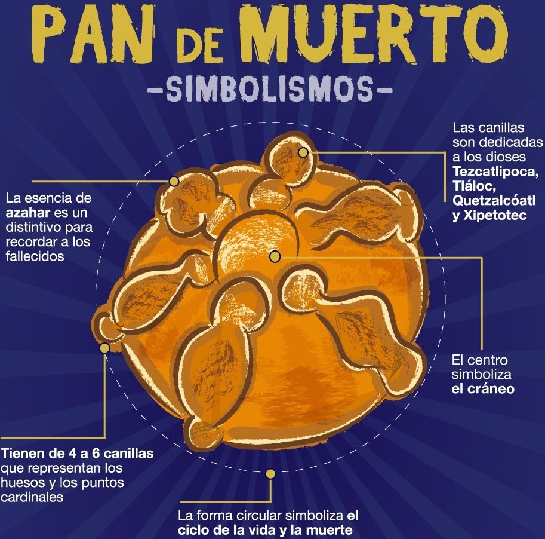
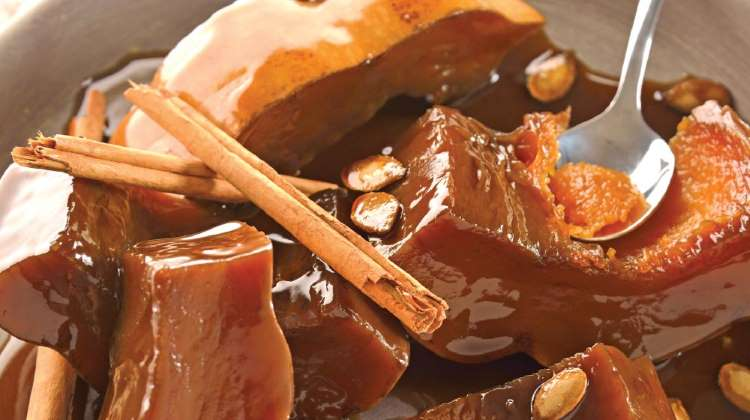
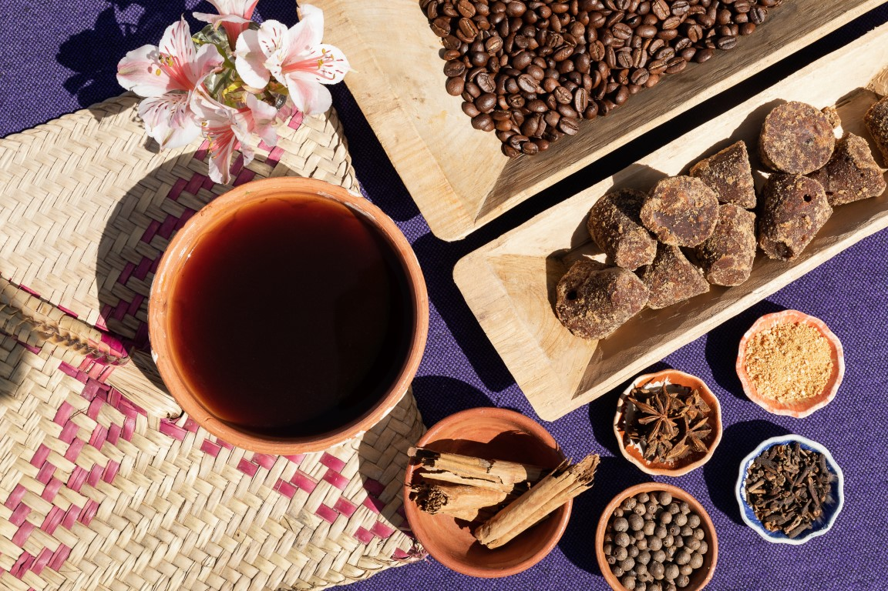
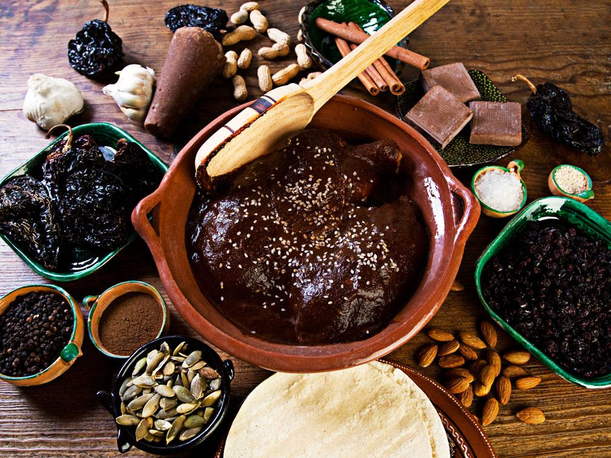
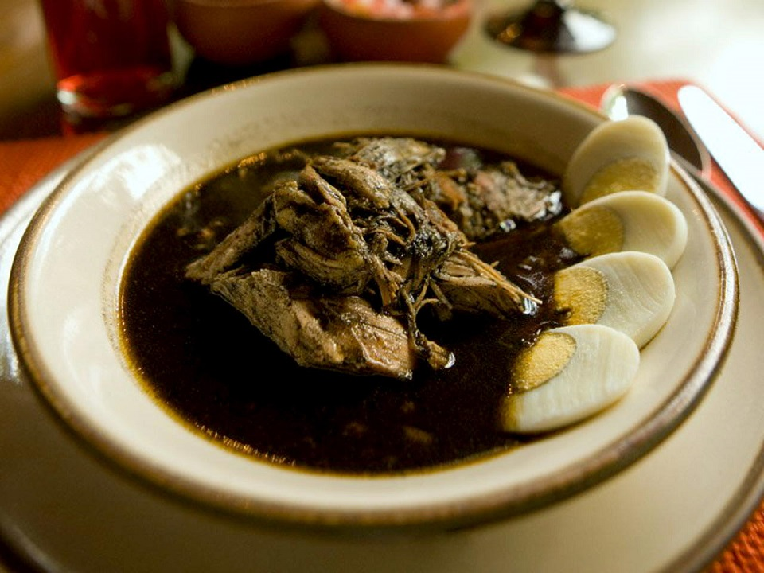
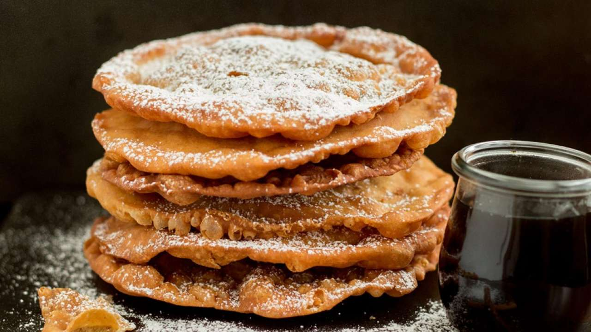
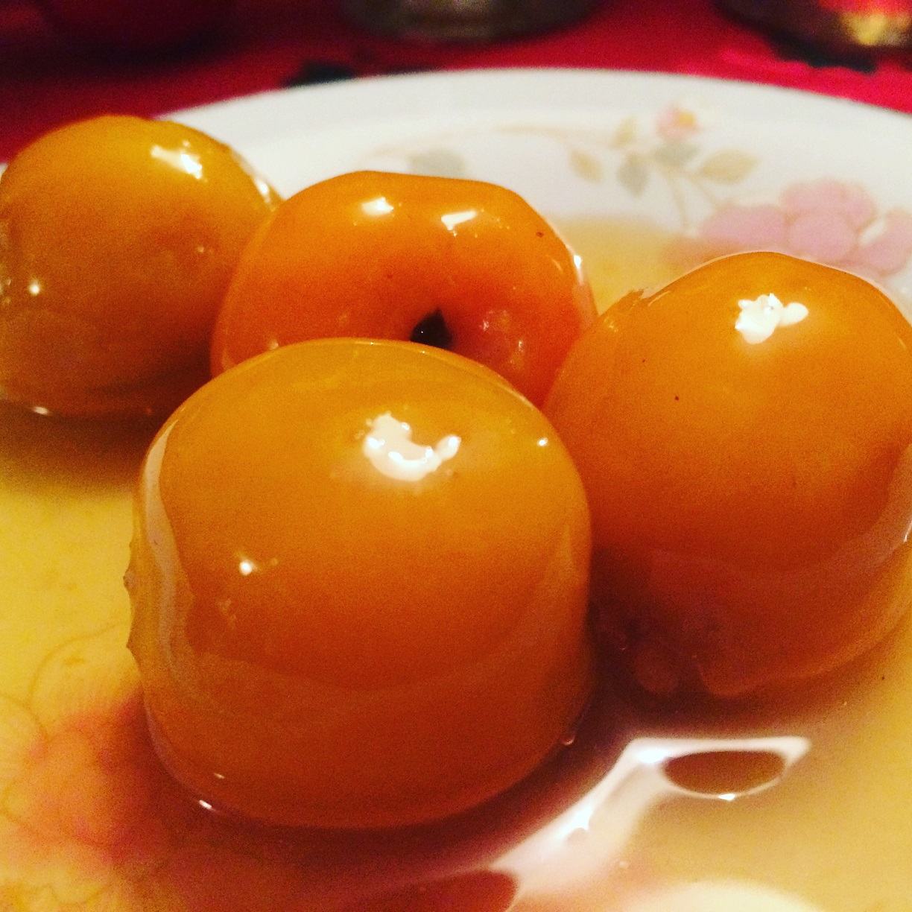
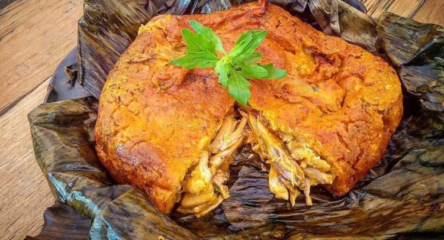

Boton para activiar el modo oscuro
Pan
de muerto

Ingredientes:
Modo de preparación:
Colocamos la harina de trigo en un tazón grande, añadimos los ingredientes secos uno a uno, azúcar, mantequilla, sal, levadura seca, después añadimos los huevos uno a uno y por último añadimos la leche.
Mezclamos todos los ingredientes, una vez perfectamente incorporados, pasamos la mezcla a una mesa de trabajo y añadimos el agua de azahar.
Con ayuda de un poco de harina sobre la superficie trabajamos la masa hasta lograr una textura elástica y que no se pegue en las manos.
Una vez lista nuestra masa, la colocamos en un recipiente, la cubrimos con un paño limpio y la colocamos en un lugar tibio (puedes ser cerca de la estufa) y la dejamos reposar por aproximadamente 1 hora, hasta que doble su volumen.
Una vez que la masa ha doblado su volumen, la sacamos del recipiente y amasamos para eliminar las burbujas de aire generadas por la fermentación.
Con la masa formamos una bola grande, cortamos un tercio de esta, la bola grande la formamos de nuevo y la colocamos en una bandeja de horno previamente engrasada y enharinada, presionamos un poco el centro.
El tercio restante lo cortamos en 5 partes iguales, con una parte hacemos una bolita que será el centro de nuestro pan de muerto, con las 4 partes restantes haremos los huesitos, haciendo primero un cilindro y después abriendo los dedos de nuestra manos hacemos presión sobre la masa, para lograr formar los huesitos que colocaremos sobre la base.
Una vez formado el pan de muerto lo cubrimos con un paño limpio, colocamos la bandeja de horno en un lugar tibio por aproximadamente 30 minutos para que esponje.
Una vez que el pan de muerto ha esponjado, lo barnizamos con huevo y llevamos al horno previamente encendido a 180°C, por 35 minutos.
Una vez listo el pan de muerto lo sacamos del horno y dejamos que se enfríe un poco.
Para finalizar lo barnizamos con mantequilla fundida, espolvoreamos generosamente con azúcar y servimos.
Mezclamos todos los ingredientes, una vez perfectamente incorporados, pasamos la mezcla a una mesa de trabajo y añadimos el agua de azahar.
Con ayuda de un poco de harina sobre la superficie trabajamos la masa hasta lograr una textura elástica y que no se pegue en las manos.
Una vez lista nuestra masa, la colocamos en un recipiente, la cubrimos con un paño limpio y la colocamos en un lugar tibio (puedes ser cerca de la estufa) y la dejamos reposar por aproximadamente 1 hora, hasta que doble su volumen.
Una vez que la masa ha doblado su volumen, la sacamos del recipiente y amasamos para eliminar las burbujas de aire generadas por la fermentación.
Con la masa formamos una bola grande, cortamos un tercio de esta, la bola grande la formamos de nuevo y la colocamos en una bandeja de horno previamente engrasada y enharinada, presionamos un poco el centro.
El tercio restante lo cortamos en 5 partes iguales, con una parte hacemos una bolita que será el centro de nuestro pan de muerto, con las 4 partes restantes haremos los huesitos, haciendo primero un cilindro y después abriendo los dedos de nuestra manos hacemos presión sobre la masa, para lograr formar los huesitos que colocaremos sobre la base.
Una vez formado el pan de muerto lo cubrimos con un paño limpio, colocamos la bandeja de horno en un lugar tibio por aproximadamente 30 minutos para que esponje.
Una vez que el pan de muerto ha esponjado, lo barnizamos con huevo y llevamos al horno previamente encendido a 180°C, por 35 minutos.
Una vez listo el pan de muerto lo sacamos del horno y dejamos que se enfríe un poco.
Para finalizar lo barnizamos con mantequilla fundida, espolvoreamos generosamente con azúcar y servimos.
Calabaza
en tacha

Ingredientes:
1. En una olla mediana coloca el agua con el piloncillo, la canela y la nuez moscada; enciende la flama a fuego medio. Mueve de vez en cuando hasta que el piloncillo se haya disuelto completamente.
2. Agrega los trozos de calabaza y cuece a fuego bajo hasta suavizarlos.
3. Retira los pedazos a un recipiente y reduce un poco el jarabe hasta que tenga una consistencia espesa y con color caramelo; baña los trozos.
2. Agrega los trozos de calabaza y cuece a fuego bajo hasta suavizarlos.
3. Retira los pedazos a un recipiente y reduce un poco el jarabe hasta que tenga una consistencia espesa y con color caramelo; baña los trozos.
Café
de olla

Ingredientes:
Modo de preparación:
Lo más recomendable es que utilices una olla de barro, y también necesitarás una cuchara de madera.
1. Pon la olla de barro a fuego. Vierte el agua en la olla.
Mezclamos todos los ingredientes, una vez perfectamente incorporados, pasamos la mezcla a una mesa de trabajo y añadimos el agua de azahar.
2. Agrega el piloncillo, la canela y los clavos de olor. Para que el piloncillo se disuelva en el agua, mueve la mezcla con ayuda de una cuchara de madera.
3. Una vez que se disuelva el piloncillo, deja que el agua hierva durante 5 minutos. Esto hará que el sabor de los ingredientes se concentre en el líquido.
4. Agrega el café molido. Baja la flama y déjalo calentarse durante cinco minutos, sin que llegue a hervir. Continúa moviendo la mezcla con la cuchara de madera.
5. Si lo deseas, cuela el café, o bien, déjalo reposar un poco y sirve directamente en un jarrito.
1. Pon la olla de barro a fuego. Vierte el agua en la olla.
Mezclamos todos los ingredientes, una vez perfectamente incorporados, pasamos la mezcla a una mesa de trabajo y añadimos el agua de azahar.
2. Agrega el piloncillo, la canela y los clavos de olor. Para que el piloncillo se disuelva en el agua, mueve la mezcla con ayuda de una cuchara de madera.
3. Una vez que se disuelva el piloncillo, deja que el agua hierva durante 5 minutos. Esto hará que el sabor de los ingredientes se concentre en el líquido.
4. Agrega el café molido. Baja la flama y déjalo calentarse durante cinco minutos, sin que llegue a hervir. Continúa moviendo la mezcla con la cuchara de madera.
5. Si lo deseas, cuela el café, o bien, déjalo reposar un poco y sirve directamente en un jarrito.
Mole
poblano

Ingredientes:
Modo de preparación:
Los chiles se pasan por 300 gramos de manteca caliente, se colocan en una cazuela con agua muy caliente y se deja que den un hervor para que se suavicen.
En la misma manteca se acitronan el ajo y la cebolla, se añaden la tortilla, el pan, las pasas, las almendras, las pepitas de chile, la mitad del ajonjolí, el anís, el clavo, la canela, las pimientas, el chocolate y el jitomate y se fríe todo muy bien; se agregan los chiles escurridos y se fríe unos segundos más.
Todo lo anterior se muele en la licuadora con el caldo donde se coció el pavo y se cuela. En una cazuela de barro especial para mole se pone a calentar el resto de la manteca, se añade la salsa, se deja hervir el mole durante cinco minutos, se sazona con sal y azúcar y, si es necesario, se añade más caldo; debe quedar una salsa espesa. Se deja hervir de 25 a 30 minutos más a fuego lento, se añaden los trozos de guajolote y se deja hervir unos minutos más.
En la misma manteca se acitronan el ajo y la cebolla, se añaden la tortilla, el pan, las pasas, las almendras, las pepitas de chile, la mitad del ajonjolí, el anís, el clavo, la canela, las pimientas, el chocolate y el jitomate y se fríe todo muy bien; se agregan los chiles escurridos y se fríe unos segundos más.
Todo lo anterior se muele en la licuadora con el caldo donde se coció el pavo y se cuela. En una cazuela de barro especial para mole se pone a calentar el resto de la manteca, se añade la salsa, se deja hervir el mole durante cinco minutos, se sazona con sal y azúcar y, si es necesario, se añade más caldo; debe quedar una salsa espesa. Se deja hervir de 25 a 30 minutos más a fuego lento, se añaden los trozos de guajolote y se deja hervir unos minutos más.
Relleno
negro

Ingredientes:
ingredientes del relleno
instrucciones
Cortar el pollo en ¼, se quita el exceso de grasa, y se pone en una olla. Se licúa el recado con ½ lt. de agua, se le agrega al pollo junto con el epazote y la sal.Mientras, acitronamos la cebolla, luego agregamos el chile xcatik y por ultimo el tomate. Vaciamos esto al caldo y agregamos la harina para darle más cuerpo. Se deja hervir x 10 minutos.
Modo de preparación:
Mezclar las carnes, junto a la cebolla y el chile dulce, sazonar con s, p. sazonador y ajo. Amasar en el recado y el huevo, hasta integrar bien. Se agregan las claras cocidas y el epazote.
Se forma un brazo acomodando en su interior las yemas cocidas. Se envuelven en manta de cielo bien amarradas y se ponen a cocer en el caldo x 1hora aprox. se sirve en rebanadas dentro del caldo.
Podemos poner unas empanaditas con relleno del caldo, cocidas dentro del caldo también.
Se forma un brazo acomodando en su interior las yemas cocidas. Se envuelven en manta de cielo bien amarradas y se ponen a cocer en el caldo x 1hora aprox. se sirve en rebanadas dentro del caldo.
Podemos poner unas empanaditas con relleno del caldo, cocidas dentro del caldo también.
Bunuelos
con miel de guayaba

para la masa
para la miel
Para la Masa:
Forma una fuente con la harina, el polvo de hornear y el huevo, mezcla y vierte poco a poco la infusión de cáscara de tomate (tibia). La masa no debe sentirse seca, sigue amasando.
Incorpora la manteca cuando la masa se sienta blanda. Mezcla hasta que la masa haga burbujas. Déjala reposar en un tazón cubierta con plástico adherente o un paño húmedo durante 30 minutos.
Divide la masa en bolitas y deja reposar tapadas 5 minutos más. Extiéndelas sobre una mesa enharinada con un rodillo hasta formar un círculo. Fríe los buñuelos con aceite caliente, cuando empiecen a inflarse, aplasta ligeramente y voltea. Retira y coloca sobre papel absorbente.
Sirve los buñuelos y vierte miel sobre cada uno.
Incorpora la manteca cuando la masa se sienta blanda. Mezcla hasta que la masa haga burbujas. Déjala reposar en un tazón cubierta con plástico adherente o un paño húmedo durante 30 minutos.
Divide la masa en bolitas y deja reposar tapadas 5 minutos más. Extiéndelas sobre una mesa enharinada con un rodillo hasta formar un círculo. Fríe los buñuelos con aceite caliente, cuando empiecen a inflarse, aplasta ligeramente y voltea. Retira y coloca sobre papel absorbente.
para la miel de guayaba
Hierve el agua con piloncillo y canela, hasta disolver. Agrega las guayabas partidas en rodajas y deja reducir a la mitad hasta obtener una miel espesa.Sirve los buñuelos y vierte miel sobre cada uno.
Pozole

Ingredientes:
Modo de preparación:
1 calienta
Calienta los 5 litros agua con ½ cebolla, 4 dientes de ajo y la sal, cuando hierva añade el maíz y cocina por 30 minutos a fuego alto o hasta que el maíz reviente. Añade la costilla, la pulpa de cerdo y el laurel; cocina por 1 hora con 30 minutos o hasta que la carne esté suave. Retira el ajo, la cebolla, las hojas de laurel y la pulpa de cerdo, deshebra la carne y reserva.2 Licua
Calienta los 5 litros agua con ½ cebolla, 4 dientes de ajo y la sal, cuando hierva añade el maíz y cocina por 30 minutos a fuego alto o hasta que el maíz reviente. Añade la costilla, la pulpa de cerdo y el laurel; cocina por 1 hora con 30 minutos o hasta que la carne esté suave. Retira el ajo, la cebolla, las hojas de laurel y la pulpa de cerdo, deshebra la carne y reserva.3 Sirve
Sirve el pozole y acompaña con orégano, chile en polvo, lechuga, rábanos, limón y tostadas de maízTejocotes
en dulce

Ingredientes:
Modo de preparación:
Colocamos una olla honda en el fuego.
Añadimos el agua.
Añadimos los tejocotes
Tapamos la olla.
Dejamos en el fuego por 25 minutos.
Retiramos los tejocotes - reservamos el agua -.
Pelamos los tejocotes - y reservamos
Regresamos el agua al fuego.
Añadimos el piloncillo.
Añadimos las rajas de canela.
Tapamos la olla.
Dejamos en el fuego por 15 minutos - o hasta que el piloncillo este fundido -.
Añadimos los tejocotes.
Tapamos la olla.
Dejamos en el fuego por 15 minutos.
Añadimos el agua.
Añadimos los tejocotes
Tapamos la olla.
Dejamos en el fuego por 25 minutos.
Retiramos los tejocotes - reservamos el agua -.
Pelamos los tejocotes - y reservamos
Regresamos el agua al fuego.
Añadimos el piloncillo.
Añadimos las rajas de canela.
Tapamos la olla.
Dejamos en el fuego por 15 minutos - o hasta que el piloncillo este fundido -.
Añadimos los tejocotes.
Tapamos la olla.
Dejamos en el fuego por 15 minutos.
PIB

Ingredientes:
Modo de preparación:
1.- Calentamos la manteca y le agregamos una parte del achiote. una vez disuelta reservamos.
2.- En una olla ponemos a cocer el pollo junto al cerdo, agregamos achiote, la ramita de epazote, cebolla y tomate en trozo. Sazonamos con sal y pimienta. Una vez cocido retiramos, deshebramos y reservamos.
3.- Tomamos la masa la revolvemos con la manteca que hervimos con el achiote. Condimentamos con sal.
4.- A medio kilo de masa le vamos ir agregando de poco en poco el caldo que nos quedó de cocer las carnes hasta formar un caldo espeso al que llamamos kool. Reservar.
5.- En un refractario colocamos la base de hoja de plátano. Tomamos 1 kilo de la masa y formamos una cama y las orillas como haciendo un pie, podemos añadir el espelon al gusto. Añadimos la carne deshebrada y el kool.
6.- Formamos en una hoja la tapa y cubrimos el pib. Cubrimos con más hoja de plátano y llevamos a hornear a 180 grados por aproximadamente 2 horas.
7.- Podemos acompañarlo con salsa de tomate y salsa de chile habanero
2.- En una olla ponemos a cocer el pollo junto al cerdo, agregamos achiote, la ramita de epazote, cebolla y tomate en trozo. Sazonamos con sal y pimienta. Una vez cocido retiramos, deshebramos y reservamos.
3.- Tomamos la masa la revolvemos con la manteca que hervimos con el achiote. Condimentamos con sal.
4.- A medio kilo de masa le vamos ir agregando de poco en poco el caldo que nos quedó de cocer las carnes hasta formar un caldo espeso al que llamamos kool. Reservar.
5.- En un refractario colocamos la base de hoja de plátano. Tomamos 1 kilo de la masa y formamos una cama y las orillas como haciendo un pie, podemos añadir el espelon al gusto. Añadimos la carne deshebrada y el kool.
6.- Formamos en una hoja la tapa y cubrimos el pib. Cubrimos con más hoja de plátano y llevamos a hornear a 180 grados por aproximadamente 2 horas.
7.- Podemos acompañarlo con salsa de tomate y salsa de chile habanero